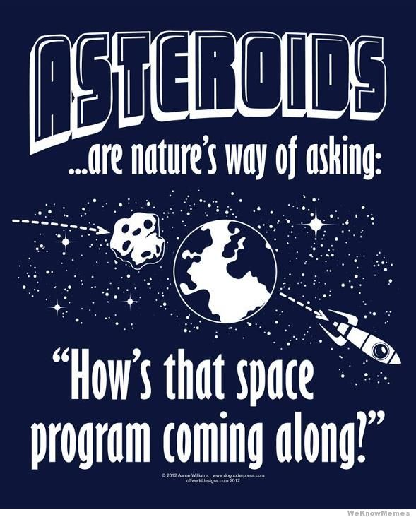

It will be a thing very soon http://www.thenewamerican.com/tech/space/item/11134-new-company-plans-to-mine-space-for-wealth
By the time you could get a PhD (for sure)

All of these things require some combo of
Programming, Math, Creative, Science, Engineering
Humanity has NEVER democratized knowledge to the extent that exists today.
we're going to hit 70 percent penetration of cellphones in the developing world by the end of 2013. Think about it, that a Masai warrior on a cellphone in the middle of Kenya has better mobile comm than President Reagan did 25 years ago.